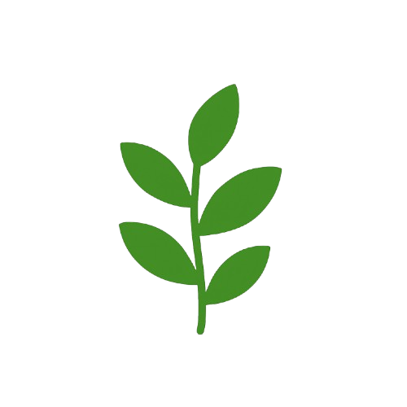
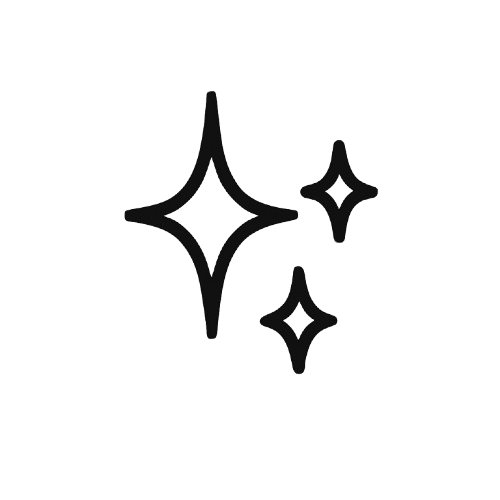
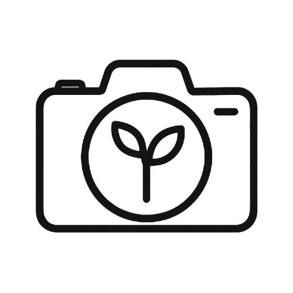
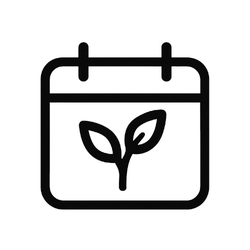

 نبض سبز
نکته روز
تاریخچه

شخصیت

شناسایی
اطلاعات

مراقبت
درمان
پاسخ نبض سبز
در حال بارگذاری...
نام گیاه را وارد کنید:
تولید نام
تصویر گیاه را آپلود کنید:
پیشنمایش تصویر:
شناسایی گیاه
نام گیاه را وارد کنید:
دریافت اطلاعات